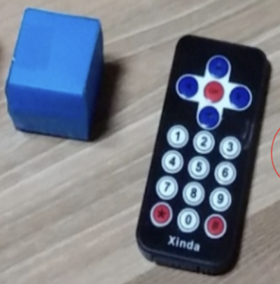

実装機能

|
ボックスを認識する機能 ボックスをセンサーに持ってくると色を認識します。 |

|
認識した情報を見せる機能 ボックスをセンサーに持ってくると認識された情報を画面に出力します。 |
|  |
カートを動く機能 リモコンの方向ボタンでカートを操作できます。 |
背景と目的
コンピュータシステム入門 授業時間にArduinoで作品を作る課題がありました。 できるだけ創造的な作品を作るために制作することになりました。
コンピュータシステム入門 授業時間にArduinoで作品を作る課題がありました。 できるだけ創造的な作品を作るために制作することになりました。
学んだこと
- RGB LED、色認識センサー、自動車モジュールの活用方法を学びました。
進行手順
- Arduinoプログラミングを行う前に、ボックス、テープ、塗料などを利用しておもちゃミニカートのモデルのみを実装しました。
- プロジェクトに必要な部品をすべて購入し、その部品を使用する例をGoogleで見つけて実行しました。
- これまでに調査したサンプルプログラムを適切に修正して1つにまとめました。
- このようにして目的のプログラムを実装できました。
担当した役割と最も努力したこと
プログラム実装総括担当、Uno(Arduino本体)2つ同士通信
プログラム実装総括担当、Uno(Arduino本体)2つ同士通信
全体構造

使用技術
Arduino
Arduino
開発環境
Arduino IDE
Arduino IDE
追加の説明
- 専攻科目「コンピュータシステム設計」の期末課題として提出しました。
- ソースコード